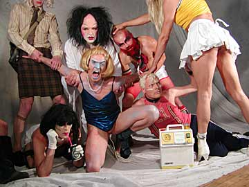

| Skøgereden Show Dance Chokterapi  |
| dunst har oprettet en galeanstalt, som er åben hele natten
og ifølge dunsterne selv så gør det ikke noget,
at du er lidt skør - hellere det end normal "Vi mangler ikke galskab, men indlæg dig alligevel frivillig på afdelingen Skøgereden på Bastionen, og vi lover dig, at du først bliver udskrevet, når vi lukker kl. 8:00 dunstbehandlet med shows, musik, dans og druk". så hvis du er til noget ud over det sædvanlige, så lover dunst, at der er noget for enhver smag, men selvfølgelig mest for den dårlige. Er der ellers noget fysisk, du kunne tænke dig efter dagens hårde strabadser? Så får du måske også det som et led i dunst intimbehandlingsterapi til nattefesten. Skøgereden har også en intensivafdeling, men det er foreløbig en hemmelighed. Men husk: du er selv en del af festen, så der er aktiv hjælp til selvhjælp. Vi ses til chockterapi på Krudtløbsvej 2, Holmen. Charlotte Amalies Bastion Krudtløbsvej 2 Holmen 16. August kl. 24 80kr. Ingen billetter i forsalg. |